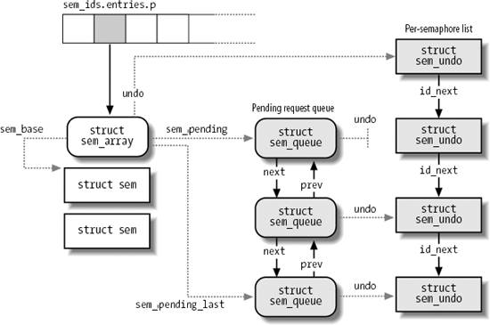
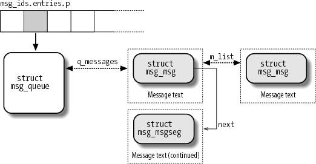
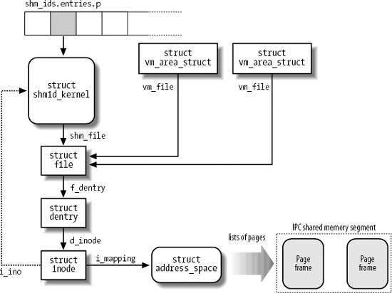

{% include JB/setup %}
{% raw %}
<div>


<a name="understandlk-CHP-19-SECT-3"></a>
<h3 class="docSection1Title">19.3. System V IPC</h3><a name="IDX-CHP-19-4594"></a>
<a name="IDX-CHP-19-4595"></a>
<a name="IDX-CHP-19-4596"></a>
<a name="IDX-CHP-19-4597"></a>
<a name="IDX-CHP-19-4598"></a>
<a name="IDX-CHP-19-4599"></a>
<a name="IDX-CHP-19-4600"></a>
<p class="docText1">IPC is an abbreviation for Interprocess Communication and commonly refers to a set of mechanisms that allow a User Mode process to do the following:</p>
<ul class="calibre11"><li class="calibre12"><p class="docText1">Synchronize itself with other processes by means of semaphores</p></li><li class="calibre12"><p class="docText1">Send messages to other processes or receive messages from them</p></li><li class="calibre12"><p class="docText1">Share a memory area with other processes</p></li></ul>
<p class="docText1">System V IPC first appeared in a development Unix variant called "Columbus Unix<a name="IDX-CHP-19-4601"></a> 
" and later was adopted by AT&amp;T's System III<a name="IDX-CHP-19-4602"></a> 
. It is now found in most Unix systems, including Linux.</p>
<p class="docText1">IPC data structures are created dynamically when a process requests an <span class="docEmphasis">IPC resource</span> (a semaphore, a message queue, or a shared memory region). An IPC resource is persistent: unless explicitly removed by a process, it is kept in memory and remains available until the system is shut down. An IPC resource may be used by every process, including those that do not share the ancestor that created the resource.</p>
<p class="docText1">Because a process may require several IPC resources<a name="IDX-CHP-19-4603"></a> 
 of the same type, each new resource is identified by a 32-bit <span class="docEmphasis">IPC key</span>, which is similar to the file pathname in the system's directory tree. Each IPC resource also has a 32-bit <span class="docEmphasis">IPC identifier</span>, which is somewhat similar to the file descriptor associated with an open file. IPC identifiers<a name="IDX-CHP-19-4604"></a> 
 are assigned to IPC resources by the kernel and are unique within the system, while IPC keys<a name="IDX-CHP-19-4605"></a> 
 can be freely chosen by programmers.</p>
<p class="docText1">When two or more processes wish to communicate through an IPC resource, they all refer to the IPC identifier of the resource.</p>
<a name="understandlk-CHP-19-SECT-3.1"></a>
<h4 class="docSection2Title">19.3.1. Using an IPC Resource</h4><a name="IDX-CHP-19-4606"></a>
<a name="IDX-CHP-19-4607"></a>
<a name="IDX-CHP-19-4608"></a>
<a name="IDX-CHP-19-4609"></a>
<a name="IDX-CHP-19-4610"></a>
<a name="IDX-CHP-19-4611"></a>
<a name="IDX-CHP-19-4612"></a>
<a name="IDX-CHP-19-4613"></a>
<a name="IDX-CHP-19-4614"></a>
<a name="IDX-CHP-19-4615"></a>
<a name="IDX-CHP-19-4616"></a>
<a name="IDX-CHP-19-4617"></a>
<a name="IDX-CHP-19-4618"></a>
<a name="IDX-CHP-19-4619"></a>
<a name="IDX-CHP-19-4620"></a>
<p class="docText1">IPC resources are created by invoking the <tt class="calibre25">semget( )</tt>, <tt class="calibre25">msgget( )</tt>, or <tt class="calibre25">shmget( )</tt> functions, depending on whether the new resource is a semaphore, a message queue, or a shared memory region.</p>
<p class="docText1">The main objective of each of these three functions is to derive from the IPC key (passed as the first parameter) the corresponding IPC identifier, which is then used by the process for accessing the resource. If there is no IPC resource already associated with the IPC key, a new resource is created. If everything goes right, the function returns a positive IPC identifier; otherwise, it returns one of the error codes listed in <a class="pcalibre5 docLink pcalibre1" href="#understandlk-CHP-19-TABLE-7">Table 19-7</a>.</p>
<a name="understandlk-CHP-19-TABLE-7"></a><p class="calibre14"><table cellspacing="0" frame="hsides" rules="all" cellpadding="4" width="100%" class="calibre15"><caption class="calibre33"><h5 class="docFigureTitle">Table 19-7. Error codes returned while requesting an IPC identifier</h5></caption><colgroup class="calibre16"><col class="calibre17"/><col class="calibre17"/></colgroup><thead class="calibre18"><tr class="calibre34"><th class="thead" scope="col"><p class="docText1"><span class="calibre5">Error code</span></p></th><th class="thead" scope="col"><p class="docText1"><span class="calibre5">Description</span></p></th></tr></thead><tr class="calibre2"><td class="docTableCell"><p class="docText2"><tt class="calibre25">EACCESS</tt></p></td><td class="docTableCell"><p class="docText2">Process does not have proper access rights</p></td></tr><tr class="calibre2"><td class="docTableCell"><p class="docText2"><tt class="calibre25">EEXIST</tt></p></td><td class="docTableCell"><p class="docText2">Process tried to create an IPC resource with the same key as one that already exists</p></td></tr><tr class="calibre2"><td class="docTableCell"><p class="docText2"><tt class="calibre25">EINVAL</tt></p></td><td class="docTableCell"><p class="docText2">Invalid argument in a parameter of <tt class="calibre25">semget( )</tt>, <tt class="calibre25">msgget( )</tt>, or <tt class="calibre25">shmget( )</tt></p></td></tr><tr class="calibre2"><td class="docTableCell"><p class="docText2"><tt class="calibre25">ENOENT</tt></p></td><td class="docTableCell"><p class="docText2">No IPC resource with the requested key exists and the process did not ask to create it</p></td></tr><tr class="calibre2"><td class="docTableCell"><p class="docText2"><tt class="calibre25">ENOMEM</tt></p></td><td class="docTableCell"><p class="docText2">No more storage is left for an additional IPC resource</p></td></tr><tr class="calibre2"><td class="docTableCell"><p class="docText2"><tt class="calibre25">ENOSPC</tt></p></td><td class="docTableCell"><p class="docText2">Maximum limit on the number of IPC resources has been exceeded</p></td></tr></table></p><br class="calibre7"/>
<p class="docText1">Assume that two independent processes want to share a common IPC resource. This can be achieved in two possible ways:</p>
<ul class="calibre11"><li class="calibre12"><p class="docText1">The processes agree on some fixed, predefined IPC key. This is the simplest case, and it works quite well for every complex application implemented by many processes. However, there's a chance that the same IPC key is chosen by another unrelated program. In this case, the IPC functions might be successfully invoked and still return the IPC identifier of the wrong resource.<sup class="docFootnote"><a class="pcalibre5 docLink pcalibre1" href="#understandlk-CHP-19-FN5">[*]</a></sup></p><blockquote class="calibre22"><p class="docFootnote1"><sup class="calibre24"><a name="understandlk-CHP-19-FN5">[*]</a></sup> The <tt class="calibre42">ftok( )</tt> function attempts to create a new key from a file pathname and an 8-bit project identifier passed as its parameters. It does not guarantee, however, a unique key number, because there is a small chance that it will return the same IPC key to two different applications using different pathnames and project identifiers.</p></blockquote></li><li class="calibre12"><p class="docText1">One process issues a <tt class="calibre25">semget( )</tt>, <tt class="calibre25">msgget( )</tt>, or <tt class="calibre25">shmget( )</tt> function by specifying <tt class="calibre25">IPC_PRIVATE</tt> as its IPC key. A new IPC resource is thus allocated, and the process can either communicate its IPC identifier to the other process in the application<sup class="docFootnote"><a class="pcalibre5 docLink pcalibre1" href="#understandlk-CHP-19-FN6">[]</a></sup> or fork the other process itself. This method ensures that the IPC resource cannot be used accidentally by other applications.</p><blockquote class="calibre22"><p class="docFootnote1"><sup class="calibre24"><a name="understandlk-CHP-19-FN6">[]</a></sup> This implies, of course, the existence of another communication channel between the processes not based on IPC.</p></blockquote></li></ul>
<p class="docText1">The last parameter of the <tt class="calibre25">semget( )</tt>, <tt class="calibre25">msgget( )</tt>, and <tt class="calibre25">shmget( )</tt> functions can include three flags. <tt class="calibre25">IPC_CREAT</tt> specifies that the IPC resource must be created, if it does not already exist; <tt class="calibre25">IPC_EXCL</tt> specifies that the function must fail if the resource already exists and the <tt class="calibre25">IPC_CREAT</tt> flag is set; <tt class="calibre25">IPC_NOWAIT</tt> specifies that the process should never block when accessing the IPC resource (typically, when fetching a message or when acquiring a semaphore).</p>
<p class="docText1">Even if the process uses the <tt class="calibre25">IPC_CREAT</tt> and <tt class="calibre25">IPC_EXCL</tt> flags, there is no way to ensure exclusive access to an IPC resource, because other processes may always refer to the resource by using its IPC identifier.</p>
<p class="docText1">To minimize the risk of incorrectly referencing the wrong resource, the kernel does not recycle IPC identifiers as soon as they become free. Instead, the IPC identifier assigned to a resource is almost always larger than the identifier assigned to the previously allocated resource of the same type. (The only exception occurs when the 32-bit IPC identifier overflows.) Each IPC identifier is computed by combining a <span class="docEmphasis">slot usage sequence number</span> relative to the resource type, an arbitrary <span class="docEmphasis">slot index</span> for the allocated resource, and an arbitrary value chosen in the kernel that is greater than the maximum number of allocatable resources. If we choose <span class="docEmphasis">s</span> to represent the slot usage sequence number, <span class="docEmphasis">M</span> to represent the upper bound on the number of allocatable resources, and <span class="docEmphasis">i</span> to represent the slot index, where 0<span class="docEmphasis">i</span>&lt;<span class="docEmphasis">M</span>, each IPC resource's ID is computed as follows:</p>
<blockquote class="calibre22">
<p class="docText1">IPC identifier = <span class="docEmphasis">s</span> x <span class="docEmphasis">M</span> + <span class="docEmphasis">i</span></p>
</blockquote>
<p class="docText1">In Linux 2.6, the value of <span class="docEmphasis">M</span> is set to 32,768 (<tt class="calibre25">IPCMNI</tt> macro). The slot usage sequence number <span class="docEmphasis">s</span> is initialized to 0 and is increased by 1 at every resource allocation. When <span class="docEmphasis">s</span> reaches a predefined threshold, which depends on the type of IPC resource, it restarts from 0.</p>
<p class="docText1">Every type of IPC resource (semaphores, message queues, and shared memory areas) owns an <tt class="calibre25">ipc_ids</tt> data structure, which includes the fields shown in <a class="pcalibre5 docLink pcalibre1" href="#understandlk-CHP-19-TABLE-8">Table 19-8</a>.</p>
<a name="understandlk-CHP-19-TABLE-8"></a><p class="calibre14"><table cellspacing="0" frame="hsides" rules="all" cellpadding="4" width="100%" class="calibre15"><caption class="calibre33"><h5 class="docFigureTitle">Table 19-8. The fields of the ipc_ids data structure</h5></caption><colgroup class="calibre16"><col class="calibre17"/><col class="calibre17"/><col class="calibre17"/></colgroup><thead class="calibre18"><tr class="calibre34"><th class="thead" scope="col"><p class="docText1"><span class="calibre5">Type</span></p></th><th class="thead" scope="col"><p class="docText1"><span class="calibre5">Field</span></p></th><th class="thead" scope="col"><p class="docText1"><span class="calibre5">Description</span></p></th></tr></thead><tr class="calibre2"><td class="docTableCell"><p class="docText2"><tt class="calibre25">int</tt></p></td><td class="docTableCell"><p class="docText2"><tt class="calibre25">in_use</tt></p></td><td class="docTableCell"><p class="docText2">Number of allocated IPC resources</p></td></tr><tr class="calibre2"><td class="docTableCell"><p class="docText2"><tt class="calibre25">int</tt></p></td><td class="docTableCell"><p class="docText2"><tt class="calibre25">max_id</tt></p></td><td class="docTableCell"><p class="docText2">Maximum slot index in use</p></td></tr><tr class="calibre2"><td class="docTableCell"><p class="docText2"><tt class="calibre25">unsigned short</tt></p></td><td class="docTableCell"><p class="docText2"><tt class="calibre25">seq</tt></p></td><td class="docTableCell"><p class="docText2">Slot usage sequence number for the next allocation</p></td></tr><tr class="calibre2"><td class="docTableCell"><p class="docText2"><tt class="calibre25">unsigned short</tt></p></td><td class="docTableCell"><p class="docText2"><tt class="calibre25">seq_max</tt></p></td><td class="docTableCell"><p class="docText2">Maximum slot usage sequence number</p></td></tr><tr class="calibre2"><td class="docTableCell"><p class="docText2"><tt class="calibre25">struct semaphore</tt></p></td><td class="docTableCell"><p class="docText2"><tt class="calibre25">sem</tt></p></td><td class="docTableCell"><p class="docText2">Semaphore protecting the <tt class="calibre25">ipc_ids</tt> data structure</p></td></tr><tr class="calibre2"><td class="docTableCell"><p class="docText2"><tt class="calibre25">struct ipc_id_ary</tt></p></td><td class="docTableCell"><p class="docText2"><tt class="calibre25">nullentry</tt></p></td><td class="docTableCell"><p class="docText2">Fake data structure pointed to by the <tt class="calibre25">entries</tt> field if this IPC resource cannot be initialized (normally not used)</p></td></tr><tr class="calibre2"><td class="docTableCell"><p class="docText2"><tt class="calibre25">struct ipc_id_ary *</tt></p></td><td class="docTableCell"><p class="docText2"><tt class="calibre25">enTRies</tt></p></td><td class="docTableCell"><p class="docText2">Pointer to the <tt class="calibre25">ipc_id_ary</tt> data structure for this resource</p></td></tr></table></p><br class="calibre7"/>
<p class="docText1">The <tt class="calibre25">ipc_id_ary</tt> data structure consists of two fields: <tt class="calibre25">p</tt> and <tt class="calibre25">size</tt>. The <tt class="calibre25">p</tt> field is an array of pointers to <tt class="calibre25">kern_ipc_perm</tt> data structures, one for every allocatable resource. The <tt class="calibre25">size</tt> field is the size of this array. Initially, the array stores 1, 16, or 128 pointers, respectively for shared memory regions, message queues, and semaphores. The kernel dynamically increases the size of the array when it becomes too small. However, there is an upper bound on the number of resources for each given type. The system administrator may change these bounds by writing into the <i class="docEmphasis">/proc/sys/kernel/sem</i>, <i class="docEmphasis">/proc/sys/kernel/msgmni</i>, and <i class="docEmphasis">/proc/sys/kernel/shmmni</i> files, respectively.</p>
<p class="docText1">Each <tt class="calibre25">kern_ipc_perm</tt> data structure is associated with an IPC resource and contains the fields shown in <a class="pcalibre5 docLink pcalibre1" href="#understandlk-CHP-19-TABLE-9">Table 19-9</a>. The <tt class="calibre25">uid</tt>, <tt class="calibre25">gid</tt>, <tt class="calibre25">cuid</tt>, and <tt class="calibre25">cgid</tt> fields store the user and group identifiers of the resource's creator and the user and group identifiers of the current resource's owner, respectively. The <tt class="calibre25">mode</tt> bit mask includes six flags, which store the read and write access permissions for the resource's owner, the resource's group, and all other users. IPC access permissions are similar to file access permissions described in the section "<a class="pcalibre5 docLink pcalibre1" href="understandlk-CHP-1-SECT-5.html#understandlk-CHP-1-SECT-5.5">Access Rights and File Mode</a>" in <a class="pcalibre5 docLink pcalibre1" href="understandlk-CHP-1.html#understandlk-CHP-1">Chapter 1</a>, except that the Execute permission flag is not used.</p>
<a name="understandlk-CHP-19-TABLE-9"></a><p class="calibre14"><table cellspacing="0" frame="hsides" rules="all" cellpadding="4" width="100%" class="calibre15"><caption class="calibre33"><h5 class="docFigureTitle">Table 19-9. The fields in the kern_ipc_ perm structure</h5></caption><colgroup class="calibre16"><col class="calibre17"/><col class="calibre17"/><col class="calibre17"/></colgroup><thead class="calibre18"><tr class="calibre34"><th class="thead" scope="col"><p class="docText1"><span class="calibre5">Type</span></p></th><th class="thead" scope="col"><p class="docText1"><span class="calibre5">Field</span></p></th><th class="thead" scope="col"><p class="docText1"><span class="calibre5">Description</span></p></th></tr></thead><tr class="calibre2"><td class="docTableCell"><p class="docText2">spinlock_t</p></td><td class="docTableCell"><p class="docText2">lock</p></td><td class="docTableCell"><p class="docText2">Spin lock protecting the IPC resource descriptor</p></td></tr><tr class="calibre2"><td class="docTableCell"><p class="docText2">int</p></td><td class="docTableCell"><p class="docText2">deleted</p></td><td class="docTableCell"><p class="docText2">Flag set if the resource has been released</p></td></tr><tr class="calibre2"><td class="docTableCell"><p class="docText2"><tt class="calibre25">int</tt></p></td><td class="docTableCell"><p class="docText2"><tt class="calibre25">key</tt></p></td><td class="docTableCell"><p class="docText2">IPC key</p></td></tr><tr class="calibre2"><td class="docTableCell"><p class="docText2"><tt class="calibre25">unsigned int</tt></p></td><td class="docTableCell"><p class="docText2"><tt class="calibre25">uid</tt></p></td><td class="docTableCell"><p class="docText2">Owner user ID</p></td></tr><tr class="calibre2"><td class="docTableCell"><p class="docText2"><tt class="calibre25">unsigned int</tt></p></td><td class="docTableCell"><p class="docText2"><tt class="calibre25">gid</tt></p></td><td class="docTableCell"><p class="docText2">Owner group ID</p></td></tr><tr class="calibre2"><td class="docTableCell"><p class="docText2"><tt class="calibre25">unsigned int</tt></p></td><td class="docTableCell"><p class="docText2"><tt class="calibre25">cuid</tt></p></td><td class="docTableCell"><p class="docText2">Creator user ID</p></td></tr><tr class="calibre2"><td class="docTableCell"><p class="docText2"><tt class="calibre25">unsigned int</tt></p></td><td class="docTableCell"><p class="docText2"><tt class="calibre25">cgid</tt></p></td><td class="docTableCell"><p class="docText2">Creator group ID</p></td></tr><tr class="calibre2"><td class="docTableCell"><p class="docText2"><tt class="calibre25">unsigned short</tt></p></td><td class="docTableCell"><p class="docText2"><tt class="calibre25">mode</tt></p></td><td class="docTableCell"><p class="docText2">Permission bit mask</p></td></tr><tr class="calibre2"><td class="docTableCell"><p class="docText2"><tt class="calibre25">unsigned long</tt></p></td><td class="docTableCell"><p class="docText2"><tt class="calibre25">seq</tt></p></td><td class="docTableCell"><p class="docText2">Slot usage sequence number</p></td></tr><tr class="calibre2"><td class="docTableCell"><p class="docText2">void *</p></td><td class="docTableCell"><p class="docText2">security</p></td><td class="docTableCell"><p class="docText2">Pointer to a security structure (used by SELinux)</p></td></tr></table></p><br class="calibre7"/>
<p class="docText1">The <tt class="calibre25">kern_ipc_perm</tt> data structure also includes a <tt class="calibre25">key</tt> field (which contains the IPC key of the corresponding resource) and a <tt class="calibre25">seq</tt> field (which stores the slot usage sequence number <span class="docEmphasis">s</span> used to compute the IPC identifier of the resource).</p>
<p class="docText1">The <tt class="calibre25">semctl( )</tt>, <tt class="calibre25">msgctl( )</tt>, and <tt class="calibre25">shmctl( )</tt> functions may be used to handle IPC resources. The <tt class="calibre25">IPC_SET</tt> subcommand allows a process to change the owner's user and group identifiers and the permission bit mask in the <tt class="calibre25">ipc_perm</tt> data structure. The <tt class="calibre25">IPC_STAT</tt> and <tt class="calibre25">IPC_INFO</tt> subcommands retrieve some information concerning a resource. Finally, the <tt class="calibre25">IPC_RMID</tt> subcommand releases an IPC resource. Depending on the type of IPC resource, other specialized subcommands are also available.<sup class="docFootnote"><a class="pcalibre5 docLink pcalibre1" href="#understandlk-CHP-19-FN7">[*]</a></sup></p><blockquote class="calibre22"><p class="docFootnote1"><sup class="calibre24"><a name="understandlk-CHP-19-FN7">[*]</a></sup> An IPC design flaw is that a User Mode process cannot atomically create and initialize an IPC semaphore, because these two operations are performed by two different IPC functions.</p></blockquote>
<p class="docText1">Once an IPC resource is created, a process may act on the resource by means of a few specialized functions. A process may acquire or release an IPC semaphore by issuing the <tt class="calibre25">semop( )</tt> function. When a process wants to send or receive an IPC message, it uses the <tt class="calibre25">msgsnd( )</tt> and <tt class="calibre25">msgrcv( )</tt> functions, respectively. Finally, a process attaches and detaches an IPC shared memory region in its address space by means of the <tt class="calibre25">shmat( )</tt> and <tt class="calibre25">shmdt( )</tt> functions, respectively.</p>
<a name="understandlk-CHP-19-SECT-3.2"></a>
<h4 class="docSection2Title">19.3.2. The ipc( ) System Call</h4><a name="IDX-CHP-19-4621"></a>
<a name="IDX-CHP-19-4622"></a>
<a name="IDX-CHP-19-4623"></a>
<a name="IDX-CHP-19-4624"></a>
<a name="IDX-CHP-19-4625"></a>
<a name="IDX-CHP-19-4626"></a>
<a name="IDX-CHP-19-4627"></a>
<a name="IDX-CHP-19-4628"></a>
<a name="IDX-CHP-19-4629"></a>
<a name="IDX-CHP-19-4630"></a>
<a name="IDX-CHP-19-4631"></a>
<a name="IDX-CHP-19-4632"></a>
<p class="docText1">All IPC functions must be implemented through suitable Linux system calls. Actually, in the 80 x 86 architecture, there is just one IPC system call named <tt class="calibre25">ipc( )</tt>. When a process invokes an IPC function, let's say <tt class="calibre25">msgget( )</tt>, it really invokes a wrapper function in the C library. This in turn invokes the <tt class="calibre25">ipc( )</tt> system call by passing to it all the parameters of <tt class="calibre25">msgget( )</tt> plus a proper subcommand codein this case, <tt class="calibre25">MSGGET</tt>. The <tt class="calibre25">sys_ipc( )</tt> service routine examines the subcommand code and invokes the kernel function that implements the requested service.</p>
<p class="docText1">The <tt class="calibre25">ipc( )</tt> "multiplexer" system call is a legacy from older Linux versions, which included the IPC code in a dynamic module (see <a class="pcalibre5 docLink pcalibre1" href="understandlk-APP-B.html#understandlk-APP-B">Appendix B</a>). It did not make much sense to reserve several system call entries in the <tt class="calibre25">system_call</tt> table for a kernel component that could be missing, so the kernel designers adopted the multiplexer approach.</p>
<p class="docText1">Nowadays, System V IPC can no longer be compiled as a dynamic module, and there is no justification for using a single IPC system call. As a matter of fact, Linux provides one system call for each IPC function on Hewlett-Packard's Alpha architecture and on Intel's IA-64.</p>
<a name="understandlk-CHP-19-SECT-3.3"></a>
<h4 class="docSection2Title">19.3.3. IPC Semaphores</h4><a name="IDX-CHP-19-4633"></a>
<a name="IDX-CHP-19-4634"></a>
<a name="IDX-CHP-19-4635"></a>
<p class="docText1">IPC semaphores<a name="IDX-CHP-19-4636"></a> 
 are quite similar to the kernel semaphores introduced in <a class="pcalibre5 docLink pcalibre1" href="understandlk-CHP-5.html#understandlk-CHP-5">Chapter 5</a>; they are counters used to provide controlled access to shared data structures for multiple processes.</p>
<p class="docText1">The semaphore value is positive if the protected resource is available, and 0 if the protected resource is currently not available. A process that wants to access the resource tries to decrease the semaphore value; the kernel, however, blocks the process until the operation on the semaphore yields a positive value. When a process relinquishes a protected resource, it increases its semaphore value; in doing so, any other process waiting for the semaphore is woken up.</p>
<p class="docText1">Actually, IPC semaphores are more complicated to handle than kernel semaphores for two main reasons:</p>
<ul class="calibre11"><li class="calibre12"><p class="docText1">Each IPC semaphore is a set of one or more semaphore values, not just a single value like a kernel semaphore. This means that the same IPC resource can protect several independent shared data structures. The number of semaphore values in each IPC semaphore must be specified as a parameter of the <tt class="calibre25">semget( )</tt> function when the resource is being allocated. From now on, we'll refer to the counters inside an IPC semaphore as <span class="docEmphasis">primitive semaphores</span><a name="IDX-CHP-19-4637"></a> 
. There are bounds both on the number of IPC semaphore resources (by default, 128) and on the number of primitive semaphores inside a single IPC semaphore resource (by default, 250); however, the system administrator can easily modify these bounds by writing into the <i class="docEmphasis">/proc<a name="IDX-CHP-19-4638"></a> 
/sys/kernel/sem</i> file.</p></li><li class="calibre12"><p class="docText1">System V IPC semaphores provide a fail-safe mechanism for situations in which a process dies without being able to undo the operations that it previously issued on a semaphore. When a process chooses to use this mechanism, the resulting operations are called <span class="docEmphasis">undoable</span> semaphore operations. When the process dies, all of its IPC semaphores can revert to the values they would have had if the process had never started its operations. This can help prevent other processes that use the same semaphores from remaining blocked indefinitely as a consequence of the terminating process failing to manually undo its semaphore operations.</p></li></ul>
<p class="docText1">First, we'll briefly sketch the typical steps performed by a process wishing to access one or more resources protected by an IPC semaphore:</p>
<div class="calibre44"><ol class="docList1" type="1"><li class="calibre12"><div class="calibre45"><p class="docList">Invokes the <tt class="calibre25">semget( )</tt> wrapper function to get the IPC semaphore identifier, specifying as the parameter the IPC key of the IPC semaphore that protects the shared resources. If the process wants to create a new IPC semaphore, it also specifies the <tt class="calibre25">IPC_CREATE</tt> or <tt class="calibre25">IPC_PRIVATE</tt> flag and the number of primitive semaphores required (see the section "<a class="pcalibre5 docLink pcalibre1" href="#understandlk-CHP-19-SECT-3.1">Using an IPC Resource</a>" earlier in this chapter).</p></div></li><li class="calibre12"><div class="calibre45"><p class="docList">Invokes the <tt class="calibre25">semop( )</tt> wrapper function to test and decrease all primitive semaphore values involved. If all the tests succeed, the decrements are performed, the function terminates, and the process is allowed to access the protected resources. If some semaphores are in use, the process is usually suspended until some other process releases the resources. The function receives as its parameters the IPC semaphore identifier, an array of integers specifying the operations to be atomically performed on the primitive semaphores, and the number of such operations. Optionally, the process may specify the <tt class="calibre25">SEM_UNDO</tt> flag, which instructs the kernel to reverse the operations, should the process exit without releasing the primitive semaphores.</p></div></li><li class="calibre12"><div class="calibre45"><p class="docList">When relinquishing the protected resources, it invokes the <tt class="calibre25">semop( )</tt> function again to atomically increase all primitive semaphores involved.</p></div></li><li class="calibre12"><div class="calibre45"><p class="docList">Optionally, it invokes the <tt class="calibre25">semctl( )</tt> wrapper function, specifying the <tt class="calibre25">IPC_RMID</tt> command to remove the IPC semaphore from the system.</p></div></li></ol></div>
<p class="docText1">Now we can discuss how the kernel implements IPC semaphores. The data structures involved are shown in <a class="pcalibre5 docLink pcalibre1" href="#understandlk-CHP-19-FIG-1">Figure 19-1</a>. The <tt class="calibre25">sem_ids</tt> variable stores the <tt class="calibre25">ipc_ids</tt> data structure of the IPC semaphore resource type; the corresponding <tt class="calibre25">ipc_id_ary</tt> data structure contains an array of pointers to <tt class="calibre25">sem_array</tt> data structures, one item for every IPC semaphore resource.</p>
<a name="understandlk-CHP-19-FIG-1"></a><p class="calibre14"><center class="calibre8">
<h5 class="docFigureTitle">Figure 19-1. IPC semaphore data structures</h5>
</center></p><br class="calibre7"/>
<p class="docText1">Formally, the array stores pointers to <tt class="calibre25">kern_ipc_perm</tt> data structures, but each structure is simply the first field of the <tt class="calibre25">sem_array</tt> data structure. All fields of the <tt class="calibre25">sem_array</tt> data structure are shown in <a class="pcalibre5 docLink pcalibre1" href="#understandlk-CHP-19-TABLE-10">Table 19-10</a>.</p>
<a name="understandlk-CHP-19-TABLE-10"></a><p class="calibre14"><table cellspacing="0" frame="hsides" rules="all" cellpadding="4" width="100%" class="calibre15"><caption class="calibre33"><h5 class="docFigureTitle">Table 19-10. The fields in the sem_array data structure</h5></caption><colgroup class="calibre16"><col class="calibre17"/><col class="calibre17"/><col class="calibre17"/></colgroup><thead class="calibre18"><tr class="calibre34"><th class="thead" scope="col"><p class="docText1"><span class="calibre5">Type</span></p></th><th class="thead" scope="col"><p class="docText1"><span class="calibre5">Field</span></p></th><th class="thead" scope="col"><p class="docText1"><span class="calibre5">Description</span></p></th></tr></thead><tr class="calibre2"><td class="docTableCell"><p class="docText2"><tt class="calibre25">struct kern_ipc_perm</tt></p></td><td class="docTableCell"><p class="docText2"><tt class="calibre25">sem_perm</tt></p></td><td class="docTableCell"><p class="docText2"><tt class="calibre25">kern_ipc_perm</tt> data structure</p></td></tr><tr class="calibre2"><td class="docTableCell"><p class="docText2"><tt class="calibre25">long</tt></p></td><td class="docTableCell"><p class="docText2"><tt class="calibre25">sem_otime</tt></p></td><td class="docTableCell"><p class="docText2">Timestamp of last <tt class="calibre25">semop( )</tt></p></td></tr><tr class="calibre2"><td class="docTableCell"><p class="docText2"><tt class="calibre25">long</tt></p></td><td class="docTableCell"><p class="docText2"><tt class="calibre25">sem_ctime</tt></p></td><td class="docTableCell"><p class="docText2">Timestamp of last change</p></td></tr><tr class="calibre2"><td class="docTableCell"><p class="docText2"><tt class="calibre25">struct sem *</tt></p></td><td class="docTableCell"><p class="docText2"><tt class="calibre25">sem_base</tt></p></td><td class="docTableCell"><p class="docText2">Pointer to first <tt class="calibre25">sem</tt> structure</p></td></tr><tr class="calibre2"><td class="docTableCell"><p class="docText2"><tt class="calibre25">struct sem_queue *</tt></p></td><td class="docTableCell"><p class="docText2"><tt class="calibre25">sem_pending</tt></p></td><td class="docTableCell"><p class="docText2">Pending operations</p></td></tr><tr class="calibre2"><td class="docTableCell"><p class="docText2"><tt class="calibre25">struct sem_queue **</tt></p></td><td class="docTableCell"><p class="docText2"><tt class="calibre25">sem_pending_last</tt></p></td><td class="docTableCell"><p class="docText2">Last pending operation</p></td></tr><tr class="calibre2"><td class="docTableCell"><p class="docText2"><tt class="calibre25">struct sem_undo *</tt></p></td><td class="docTableCell"><p class="docText2"><tt class="calibre25">undo</tt></p></td><td class="docTableCell"><p class="docText2">Undo requests</p></td></tr><tr class="calibre2"><td class="docTableCell"><p class="docText2"><tt class="calibre25">unsigned long</tt></p></td><td class="docTableCell"><p class="docText2"><tt class="calibre25">sem_nsems</tt></p></td><td class="docTableCell"><p class="docText2">Number of semaphores in array</p></td></tr></table></p><br class="calibre7"/>
<p class="docText1">The <tt class="calibre25">sem_base</tt> field points to an array of <tt class="calibre25">sem</tt> data structures, one for every IPC primitive semaphore. The latter data structure includes only two fields:</p>
<dl class="docText1"><dt class="calibre7"><br class="calibre7"/><p class="calibre14"><span class="docPubcolor"><span class="docPubcolor"><span class="docMonofont">semval</span></span></span></p></dt>
<dd class="calibre20"><p class="docList">The value of the semaphore's counter.</p></dd><dt class="calibre7"><br class="calibre7"/><p class="calibre14"><span class="docPubcolor"><span class="docPubcolor"><span class="docMonofont">sempid</span></span></span></p></dt>
<dd class="calibre20"><p class="docList">The PID of the last process that accessed the semaphore. This value can be queried by a process through the <tt class="calibre25">semctl( )</tt> wrapper function.</p></dd></dl>
<a name="understandlk-CHP-19-SECT-3.3.1"></a>
<h5 class="docSection3Title">19.3.3.1. Undoable semaphore operations</h5><a name="IDX-CHP-19-4639"></a>
<a name="IDX-CHP-19-4640"></a>
<a name="IDX-CHP-19-4641"></a>
<a name="IDX-CHP-19-4642"></a>
<a name="IDX-CHP-19-4643"></a>
<a name="IDX-CHP-19-4644"></a>
<p class="docText1">If a process aborts suddenly, it cannot undo the operations that it started (for instance, release the semaphores it reserved); so by declaring them undoable, the process lets the kernel return the semaphores to a consistent state and allow other processes to proceed. Processes can request undoable operations by specifying the <tt class="calibre25">SEM_UNDO</tt> flag in the <tt class="calibre25">semop( )</tt> function.</p>
<p class="docText1">Information to help the kernel reverse the undoable operations performed by a given process on a given IPC semaphore resource is stored in a <tt class="calibre25">sem_undo</tt> data structure. It essentially contains the IPC identifier of the semaphore and an array of integers representing the changes to the primitive semaphore's values caused by all undoable operations performed by the process.</p>
<p class="docText1">A simple example can illustrate how such <tt class="calibre25">sem_undo</tt> elements are used. Consider a process that uses an IPC semaphore resource containing four primitive semaphores. Suppose that it invokes the <tt class="calibre25">semop( )</tt> function to increase the first counter by 1 and decrease the second by 2. If it specifies the <tt class="calibre25">SEM_UNDO</tt> flag, the integer in the first array element in the <tt class="calibre25">sem_undo</tt> data structure is decreased by 1, the integer in the second element is increased by 2, and the other two integers are left unchanged. Further undoable operations on the IPC semaphore performed by the same process change the integers stored in the <tt class="calibre25">sem_undo</tt> structure accordingly. When the process exits, any nonzero value in that array corresponds to one or more unbalanced operations on the corresponding primitive semaphore; the kernel reverses these operations, simply adding the nonzero value to the corresponding semaphore's counter. In other words, the changes made by the aborted process are backed out while the changes made by other processes are still reflected in the state of the semaphores.</p>
<p class="docText1">For each process, the kernel keeps track of all semaphore resources handled with undoable operations so that it can roll them back if the process unexpectedly exits. Furthermore, for each semaphore, the kernel has to keep track of all its <tt class="calibre25">sem_undo</tt> structures so it can quickly access them whenever a process uses <tt class="calibre25">semctl( )</tt> to force an explicit value into a primitive semaphore's counter or to destroy an IPC semaphore resource.</p>
<p class="docText1">The kernel is able to handle these tasks efficiently, thanks to two lists, which we denote as the <span class="docEmphasis">per-process</span> and the <span class="docEmphasis">per-semaphore</span> lists. The first list keeps track of all semaphores operated upon by a given process with undoable operations. The second list keeps track of all processes that are acting on a given semaphore with undoable operations. More precisely:</p>
<ul class="calibre11"><li class="calibre12"><p class="docText1">The per-process list includes all <tt class="calibre25">sem_undo</tt> data structures corresponding to IPC semaphores on which the process has performed undoable operations. The <tt class="calibre25">sysvsem.undo_list</tt> field of the process descriptor points to a data structure, of type <tt class="calibre25">sem_undo_list</tt>, which in turn contains a pointer to the first element of the list; the <tt class="calibre25">proc_next</tt> field of each <tt class="calibre25">sem_undo</tt> data structure points to the next element in the list. (As mentioned in the section "<a class="pcalibre5 docLink pcalibre1" href="understandlk-CHP-3-SECT-4.html#understandlk-CHP-3-SECT-4.1">The clone( ), fork( ), and vfork( ) System Calls</a>" in <a class="pcalibre5 docLink pcalibre1" href="understandlk-CHP-3.html#understandlk-CHP-3">Chapter 3</a>, clone processes created by passing the <tt class="calibre25">CLONE_SYSVSEM</tt> flag to the <tt class="calibre25">clone( )</tt><a name="IDX-CHP-19-4645"></a> 
 system call share the same list of undoable semaphore operations, because they share the same <tt class="calibre25">sem_undo_list</tt> descriptor.)</p></li><li class="calibre12"><p class="docText1">The per-semaphore list includes all <tt class="calibre25">sem_undo</tt> data structures corresponding to the processes that performed undoable operations on the semaphore. The <tt class="calibre25">undo</tt> field of the <tt class="calibre25">sem_array</tt> data structure points to the first element of the list, while the <tt class="calibre25">id_next</tt> field of each <tt class="calibre25">sem_undo</tt> data structure points to the next element in the list.</p></li></ul>
<p class="docText1">The per-process list is used when a process terminates. The <tt class="calibre25">exit_sem( )</tt> function, which is invoked by <tt class="calibre25">do_exit( )</tt>, walks through the list and reverses the effect of any unbalanced operation for every IPC semaphore touched by the process. By contrast, the per-semaphore list is mainly used when a process invokes the <tt class="calibre25">semctl( )</tt> function to force an explicit value into a primitive semaphore. The kernel sets the corresponding element to 0 in the arrays of all <tt class="calibre25">sem_undo</tt> data structures referring to that IPC semaphore resource, because it would no longer make any sense to reverse the effect of previous undoable operations performed on that primitive semaphore. Moreover, the per-semaphore list is also used when an IPC semaphore is destroyed; all related <tt class="calibre25">sem_undo</tt> data structures are invalidated by setting the <tt class="calibre25">semid</tt> field to -1.<sup class="docFootnote"><a class="pcalibre5 docLink pcalibre1" href="#understandlk-CHP-19-FN8">[*]</a></sup></p><blockquote class="calibre22"><p class="docFootnote1"><sup class="calibre24"><a name="understandlk-CHP-19-FN8">[*]</a></sup> Notice that they are just invalidated and not freed, because it would be too costly to remove the data structures from the per-process lists of all processes.</p></blockquote>
<a name="understandlk-CHP-19-SECT-3.3.2"></a>
<h5 class="docSection3Title">19.3.3.2. The queue of pending requests</h5><a name="IDX-CHP-19-4646"></a>
<a name="IDX-CHP-19-4647"></a>
<p class="docText1">The kernel associates a <span class="docEmphasis">queue of pending requests</span> with each IPC semaphore to identify processes that are waiting on one (or more) of the semaphores in the array. The queue is a doubly linked list of <tt class="calibre25">sem_queue</tt> data structures whose fields are shown in <a class="pcalibre5 docLink pcalibre1" href="#understandlk-CHP-19-TABLE-11">Table 19-11</a>. The first and last pending requests in the queue are referenced, respectively, by the <tt class="calibre25">sem_pending</tt> and <tt class="calibre25">sem_pending_last</tt> fields of the <tt class="calibre25">sem_array</tt> structure. This last field allows the list to be handled as easily as a FIFO; new pending requests are added to the end of the list so they will be serviced later. The most important fields of a pending request are <tt class="calibre25">nsops</tt> (which stores the number of primitive semaphores involved in the pending operation) and <tt class="calibre25">sops</tt> (which points to an array of integer values describing each semaphore operation). The <tt class="calibre25">sleeper</tt> field stores the descriptor address of the sleeping process that requested the operation.</p>
<a name="understandlk-CHP-19-TABLE-11"></a><p class="calibre14"><table cellspacing="0" frame="hsides" rules="all" cellpadding="4" width="100%" class="calibre15"><caption class="calibre33"><h5 class="docFigureTitle">Table 19-11. The fields in the sem_queue data structure</h5></caption><colgroup class="calibre16"><col class="calibre17"/><col class="calibre17"/><col class="calibre17"/></colgroup><thead class="calibre18"><tr class="calibre34"><th class="thead" scope="col"><p class="docText1"><span class="calibre5">Type</span></p></th><th class="thead" scope="col"><p class="docText1"><span class="calibre5">Field</span></p></th><th class="thead" scope="col"><p class="docText1"><span class="calibre5">Description</span></p></th></tr></thead><tr class="calibre2"><td class="docTableCell"><p class="docText2"><tt class="calibre25">struct sem_queue *</tt></p></td><td class="docTableCell"><p class="docText2"><tt class="calibre25">next</tt></p></td><td class="docTableCell"><p class="docText2">Pointer to next queue element</p></td></tr><tr class="calibre2"><td class="docTableCell"><p class="docText2"><tt class="calibre25">struct sem_queue **</tt></p></td><td class="docTableCell"><p class="docText2"><tt class="calibre25">prev</tt></p></td><td class="docTableCell"><p class="docText2">Pointer to previous queue element</p></td></tr><tr class="calibre2"><td class="docTableCell"><p class="docText2"><tt class="calibre25">struct task_struct *</tt></p></td><td class="docTableCell"><p class="docText2"><tt class="calibre25">sleeper</tt></p></td><td class="docTableCell"><p class="docText2">Pointer to the sleeping process that requested the semaphore operation</p></td></tr><tr class="calibre2"><td class="docTableCell"><p class="docText2"><tt class="calibre25">struct sem_undo *</tt></p></td><td class="docTableCell"><p class="docText2"><tt class="calibre25">undo</tt></p></td><td class="docTableCell"><p class="docText2">Pointer to <tt class="calibre25">sem_undo</tt> structure</p></td></tr><tr class="calibre2"><td class="docTableCell"><p class="docText2"><tt class="calibre25">int</tt></p></td><td class="docTableCell"><p class="docText2"><tt class="calibre25">pid</tt></p></td><td class="docTableCell"><p class="docText2">Process identifier</p></td></tr><tr class="calibre2"><td class="docTableCell"><p class="docText2"><tt class="calibre25">int</tt></p></td><td class="docTableCell"><p class="docText2"><tt class="calibre25">status</tt></p></td><td class="docTableCell"><p class="docText2">Completion status of operation</p></td></tr><tr class="calibre2"><td class="docTableCell"><p class="docText2"><tt class="calibre25">struct sem_array *</tt></p></td><td class="docTableCell"><p class="docText2"><tt class="calibre25">sma</tt></p></td><td class="docTableCell"><p class="docText2">Pointer to IPC semaphore descriptor</p></td></tr><tr class="calibre2"><td class="docTableCell"><p class="docText2"><tt class="calibre25">int</tt></p></td><td class="docTableCell"><p class="docText2"><tt class="calibre25">id</tt></p></td><td class="docTableCell"><p class="docText2">Slot index of the IPC semaphore resource</p></td></tr><tr class="calibre2"><td class="docTableCell"><p class="docText2"><tt class="calibre25">struct sembuf *</tt></p></td><td class="docTableCell"><p class="docText2"><tt class="calibre25">sops</tt></p></td><td class="docTableCell"><p class="docText2">Pointer to array of pending operations</p></td></tr><tr class="calibre2"><td class="docTableCell"><p class="docText2"><tt class="calibre25">int</tt></p></td><td class="docTableCell"><p class="docText2"><tt class="calibre25">nsops</tt></p></td><td class="docTableCell"><p class="docText2">Number of pending operations</p></td></tr><tr class="calibre2"><td class="docTableCell"><p class="docText2">int</p></td><td class="docTableCell"><p class="docText2">alter</p></td><td class="docTableCell"><p class="docText2">Flag denoting whether the operation modifies the semaphore array</p></td></tr></table></p><br class="calibre7"/>
<p class="docText1"><a class="pcalibre5 docLink pcalibre1" href="#understandlk-CHP-19-FIG-1">Figure 19-1</a> illustrates an IPC semaphore that has three pending requests. The second and third requests refer to undoable operations, so the <tt class="calibre25">undo</tt> field of the <tt class="calibre25">sem_queue</tt> data structure points to the corresponding <tt class="calibre25">sem_undo</tt> structure; the first pending request has a <tt class="calibre25">NULL undo</tt> field because the corresponding operation is not undoable.</p>
<a name="understandlk-CHP-19-SECT-3.4"></a>
<h4 class="docSection2Title">19.3.4. IPC Messages</h4><a name="IDX-CHP-19-4648"></a>
<a name="IDX-CHP-19-4649"></a>
<a name="IDX-CHP-19-4650"></a>
<a name="IDX-CHP-19-4651"></a>
<a name="IDX-CHP-19-4652"></a>
<a name="IDX-CHP-19-4653"></a>
<a name="IDX-CHP-19-4654"></a>
<a name="IDX-CHP-19-4655"></a>
<p class="docText1">Processes can communicate with one another by means of IPC messages<a name="IDX-CHP-19-4656"></a> 
. Each message generated by a process is sent to an <span class="docEmphasis">IPC message queue</span>, where it stays until another process reads it.</p>
<p class="docText1">A message is composed of a fixed-size <span class="docEmphasis">header</span> and a variable-length <span class="docEmphasis">text</span>; it can be labeled with an integer value (the <span class="docEmphasis">message type</span>), which allows a process to selectively retrieve messages from its message queue.<sup class="docFootnote"><a class="pcalibre5 docLink pcalibre1" href="#understandlk-CHP-19-FN9">[*]</a></sup> Once a process has read a message from an IPC message queue, the kernel destroys the message; therefore, only one process can receive a given message.</p><blockquote class="calibre22"><p class="docFootnote1"><sup class="calibre24"><a name="understandlk-CHP-19-FN9">[*]</a></sup> As we'll see, the message queue is implemented by means of a linked list. Because messages can be retrieved in an order different from "first in, first out," the name "message queue" is not appropriate. However, new messages are always put at the end of the linked list.</p></blockquote>
<p class="docText1">To send a message, a process invokes the <tt class="calibre25">msgsnd( )</tt> function, passing the following as parameters:</p>
<ul class="calibre11"><li class="calibre12"><p class="docText1">The IPC identifier of the destination message queue</p></li><li class="calibre12"><p class="docText1">The size of the message text</p></li><li class="calibre12"><p class="docText1">The address of a User Mode buffer that contains the message type immediately followed by the message text</p></li></ul>
<p class="docText1">To retrieve a message, a process invokes the <tt class="calibre25">msgrcv( )</tt> function, passing to it:</p>
<ul class="calibre11"><li class="calibre12"><p class="docText1">The IPC identifier of the IPC message queue resource</p></li><li class="calibre12"><p class="docText1">The pointer to a User Mode buffer to which the message type and message text should be copied</p></li><li class="calibre12"><p class="docText1">The size of this buffer</p></li><li class="calibre12"><p class="docText1">A value <span class="docEmphasis">t</span> that specifies what message should be retrieved</p></li></ul>
<p class="docText1">If the value <span class="docEmphasis">t</span> is 0, the first message in the queue is returned. If <span class="docEmphasis">t</span> is positive, the first message in the queue with its type equal to <span class="docEmphasis">t</span> is returned. Finally, if <span class="docEmphasis">t</span> is negative, the function returns the first message whose message type is the lowest value less than or equal to the absolute value of <span class="docEmphasis">t</span>.</p>
<p class="docText1">To avoid resource exhaustion, there are some limits on the number of IPC message queue resources allowed (by default, 16), on the size of each message (by default, 8,192 bytes), and on the maximum total size of the messages in a queue (by default, 16,384 bytes). As usual, however, the system administrator can tune these values by writing into the <i class="docEmphasis">/proc<a name="IDX-CHP-19-4657"></a> 
/sys/kernel/msgmni</i>, <i class="docEmphasis">/proc/sys/kernel/msgmnb</i>, and <i class="docEmphasis">/proc/sys/kernel/msgmax</i> files, respectively.</p>
<p class="docText1">The data structures associated with IPC message queues<a name="IDX-CHP-19-4658"></a> 
 are shown in <a class="pcalibre5 docLink pcalibre1" href="#understandlk-CHP-19-FIG-2">Figure 19-2</a>. The <tt class="calibre25">msg_ids</tt> variable stores the <tt class="calibre25">ipc_ids</tt> data structure of the IPC message queue resource type; the corresponding <tt class="calibre25">ipc_id_ary</tt> data structure contains an array of pointers to <tt class="calibre25">shmid_kernel</tt> data structuresone item for every IPC message queue resource. Formally, the array stores pointers to <tt class="calibre25">kern_ipc_perm</tt> data structures, but each such structure is simply the first field of the <tt class="calibre25">msg_queue</tt> data structure. All fields of the <tt class="calibre25">msg_queue</tt> data structure are shown in <a class="pcalibre5 docLink pcalibre1" href="#understandlk-CHP-19-TABLE-12">Table 19-12</a>.</p>
<a name="understandlk-CHP-19-FIG-2"></a><p class="calibre14"><center class="calibre8">
<h5 class="docFigureTitle">Figure 19-2. IPC message queue data structures</h5>
</center></p><br class="calibre7"/>
<a name="understandlk-CHP-19-TABLE-12"></a><p class="calibre14"><table cellspacing="0" frame="hsides" rules="all" cellpadding="4" width="100%" class="calibre15"><caption class="calibre33"><h5 class="docFigureTitle">Table 19-12. The msg_queue data structure</h5></caption><colgroup class="calibre16"><col class="calibre17"/><col class="calibre17"/><col class="calibre17"/></colgroup><thead class="calibre18"><tr class="calibre34"><th class="thead" scope="col"><p class="docText1"><span class="calibre5">Type</span></p></th><th class="thead" scope="col"><p class="docText1"><span class="calibre5">Field</span></p></th><th class="thead" scope="col"><p class="docText1"><span class="calibre5">Description</span></p></th></tr></thead><tr class="calibre2"><td class="docTableCell"><p class="docText2"><tt class="calibre25">struct kern_ipc_perm</tt></p></td><td class="docTableCell"><p class="docText2"><tt class="calibre25">q_perm</tt></p></td><td class="docTableCell"><p class="docText2"><tt class="calibre25">kern_ipc_perm</tt> data structure</p></td></tr><tr class="calibre2"><td class="docTableCell"><p class="docText2"><tt class="calibre25">long</tt></p></td><td class="docTableCell"><p class="docText2"><tt class="calibre25">q_stime</tt></p></td><td class="docTableCell"><p class="docText2">Time of last <tt class="calibre25">msgsnd( )</tt></p></td></tr><tr class="calibre2"><td class="docTableCell"><p class="docText2"><tt class="calibre25">long</tt></p></td><td class="docTableCell"><p class="docText2"><tt class="calibre25">q_rtime</tt></p></td><td class="docTableCell"><p class="docText2">Time of last <tt class="calibre25">msgrcv( )</tt></p></td></tr><tr class="calibre2"><td class="docTableCell"><p class="docText2"><tt class="calibre25">long</tt></p></td><td class="docTableCell"><p class="docText2"><tt class="calibre25">q_ctime</tt></p></td><td class="docTableCell"><p class="docText2">Last change time</p></td></tr><tr class="calibre2"><td class="docTableCell"><p class="docText2"><tt class="calibre25">unsigned long</tt></p></td><td class="docTableCell"><p class="docText2"><tt class="calibre25">q_qcbytes</tt></p></td><td class="docTableCell"><p class="docText2">Number of bytes in queue</p></td></tr><tr class="calibre2"><td class="docTableCell"><p class="docText2"><tt class="calibre25">unsigned long</tt></p></td><td class="docTableCell"><p class="docText2"><tt class="calibre25">q_qnum</tt></p></td><td class="docTableCell"><p class="docText2">Number of messages in queue</p></td></tr><tr class="calibre2"><td class="docTableCell"><p class="docText2"><tt class="calibre25">unsigned long</tt></p></td><td class="docTableCell"><p class="docText2"><tt class="calibre25">q_qbytes</tt></p></td><td class="docTableCell"><p class="docText2">Maximum number of bytes in queue</p></td></tr><tr class="calibre2"><td class="docTableCell"><p class="docText2"><tt class="calibre25">int</tt></p></td><td class="docTableCell"><p class="docText2"><tt class="calibre25">q_lspid</tt></p></td><td class="docTableCell"><p class="docText2">PID of last <tt class="calibre25">msgsnd( )</tt></p></td></tr><tr class="calibre2"><td class="docTableCell"><p class="docText2"><tt class="calibre25">int</tt></p></td><td class="docTableCell"><p class="docText2"><tt class="calibre25">q_lrpid</tt></p></td><td class="docTableCell"><p class="docText2">PID of last <tt class="calibre25">msgrcv( )</tt></p></td></tr><tr class="calibre2"><td class="docTableCell"><p class="docText2"><tt class="calibre25">struct list_head</tt></p></td><td class="docTableCell"><p class="docText2"><tt class="calibre25">q_messages</tt></p></td><td class="docTableCell"><p class="docText2">List of messages in queue</p></td></tr><tr class="calibre2"><td class="docTableCell"><p class="docText2"><tt class="calibre25">struct list_head</tt></p></td><td class="docTableCell"><p class="docText2"><tt class="calibre25">q_receivers</tt></p></td><td class="docTableCell"><p class="docText2">List of processes receiving messages</p></td></tr><tr class="calibre2"><td class="docTableCell"><p class="docText2"><tt class="calibre25">struct list_head</tt></p></td><td class="docTableCell"><p class="docText2"><tt class="calibre25">q_senders</tt></p></td><td class="docTableCell"><p class="docText2">List of processes sending messages</p></td></tr></table></p><br class="calibre7"/>
<p class="docText1">The most important field is <tt class="calibre25">q_messages</tt>, which represents the head (i.e., the first dummy element) of a doubly linked circular list containing all messages currently in the queue.</p>
<p class="docText1">Each message is broken into one or more pages, which are dynamically allocated. The beginning of the first page stores the message header, which is a data structure of type <tt class="calibre25">msg_msg</tt>; its fields are listed in <a class="pcalibre5 docLink pcalibre1" href="#understandlk-CHP-19-TABLE-13">Table 19-13</a>. The <tt class="calibre25">m_list</tt> field stores the pointers to the previous and next messages in the queue. The message text starts right after the <tt class="calibre25">msg_msg</tt> descriptor; if the message is longer than 4,072 bytes (the page size minus the size of the <tt class="calibre25">msg_msg</tt> descriptor), it continues on another page, whose address is stored in the <tt class="calibre25">next</tt> field of the <tt class="calibre25">msg_msg</tt> descriptor. The second page frame starts with a descriptor of type <tt class="calibre25">msg_msgseg</tt>, which simply includes a <tt class="calibre25">next</tt> pointer storing the address of an optional third page, and so on.</p>
<a name="understandlk-CHP-19-TABLE-13"></a><p class="calibre14"><table cellspacing="0" frame="hsides" rules="all" cellpadding="4" width="100%" class="calibre15"><caption class="calibre33"><h5 class="docFigureTitle">Table 19-13. The msg_msg data structure</h5></caption><colgroup class="calibre16"><col class="calibre17"/><col class="calibre17"/><col class="calibre17"/></colgroup><thead class="calibre18"><tr class="calibre34"><th class="thead" scope="col"><p class="docText1"><span class="calibre5">Type</span></p></th><th class="thead" scope="col"><p class="docText1"><span class="calibre5">Field</span></p></th><th class="thead" scope="col"><p class="docText1"><span class="calibre5">Description</span></p></th></tr></thead><tr class="calibre2"><td class="docTableCell"><p class="docText2"><tt class="calibre25">struct list_head</tt></p></td><td class="docTableCell"><p class="docText2"><tt class="calibre25">m_list</tt></p></td><td class="docTableCell"><p class="docText2">Pointers for message list</p></td></tr><tr class="calibre2"><td class="docTableCell"><p class="docText2"><tt class="calibre25">long</tt></p></td><td class="docTableCell"><p class="docText2"><tt class="calibre25">m_type</tt></p></td><td class="docTableCell"><p class="docText2">Message type</p></td></tr><tr class="calibre2"><td class="docTableCell"><p class="docText2"><tt class="calibre25">int</tt></p></td><td class="docTableCell"><p class="docText2"><tt class="calibre25">m_ts</tt></p></td><td class="docTableCell"><p class="docText2">Message text size</p></td></tr><tr class="calibre2"><td class="docTableCell"><p class="docText2"><tt class="calibre25">struct msg_msgseg *</tt></p></td><td class="docTableCell"><p class="docText2"><tt class="calibre25">next</tt></p></td><td class="docTableCell"><p class="docText2">Next portion of the message</p></td></tr><tr class="calibre2"><td class="docTableCell"><p class="docText2">void *</p></td><td class="docTableCell"><p class="docText2">security</p></td><td class="docTableCell"><p class="docText2">Pointer to a security data structure (used by SELinux)</p></td></tr></table></p><br class="calibre7"/>
<p class="docText1">When the message queue is full (either the maximum number of messages or the maximum total size has been reached), processes that try to enqueue new messages may be blocked. The <tt class="calibre25">q_senders</tt> field of the <tt class="calibre25">msg_queue</tt> data structure is the head of a list that includes the pointers to the descriptors of all blocked sending processes.</p>
<p class="docText1">Even receiving processes may be blocked when the message queue is empty (or the process specified a type of message not present in the queue). The <tt class="calibre25">q_receivers</tt> field of the <tt class="calibre25">msg_queue</tt> data structure is the head of a list of <tt class="calibre25">msg_receiver</tt> data structures, one for every blocked receiving process. Each of these structures essentially includes a pointer to the process descriptor, a pointer to the <tt class="calibre25">msg_msg</tt> structure of the message, and the type of the requested message.</p>
<a name="understandlk-CHP-19-SECT-3.5"></a>
<h4 class="docSection2Title">19.3.5. IPC Shared Memory</h4><a name="IDX-CHP-19-4659"></a>
<a name="IDX-CHP-19-4660"></a>
<a name="IDX-CHP-19-4661"></a>
<a name="IDX-CHP-19-4662"></a>
<a name="IDX-CHP-19-4663"></a>
<a name="IDX-CHP-19-4664"></a>
<a name="IDX-CHP-19-4665"></a>
<a name="IDX-CHP-19-4666"></a>
<a name="IDX-CHP-19-4667"></a>
<a name="IDX-CHP-19-4668"></a>
<a name="IDX-CHP-19-4669"></a>
<p class="docText1">The most useful IPC mechanism is shared memory<a name="IDX-CHP-19-4670"></a> 
, which allows two or more processes to access some common data structures by placing them in an <span class="docEmphasis">IPC shared memory region</span>. Each process that wants to access the data structures included in an IPC shared memory region must add to its address space a new memory region (see the section "<a class="pcalibre5 docLink pcalibre1" href="understandlk-CHP-9-SECT-3.html#understandlk-CHP-9-SECT-3">Memory Regions</a>" in <a class="pcalibre5 docLink pcalibre1" href="understandlk-CHP-9.html#understandlk-CHP-9">Chapter 9</a>), which maps the page frames associated with the IPC shared memory region. Such page frames can then be easily handled by the kernel through demand paging<a name="IDX-CHP-19-4671"></a> 
 (see the section "<a class="pcalibre5 docLink pcalibre1" href="understandlk-CHP-9-SECT-4.html#understandlk-CHP-9-SECT-4.3">Demand Paging</a>" in <a class="pcalibre5 docLink pcalibre1" href="understandlk-CHP-9.html#understandlk-CHP-9">Chapter 9</a>).</p>
<p class="docText1">As with semaphores and message queues, the <tt class="calibre25">shmget( )</tt> function is invoked to get the IPC identifier of a shared memory region, optionally creating it if it does not already exist.</p>
<p class="docText1">The <tt class="calibre25">shmat( )</tt> function is invoked to "attach" an IPC shared memory region to a process. It receives as its parameter the identifier of the IPC shared memory resource and tries to add a shared memory region to the address space of the calling process. The calling process can require a specific starting linear address for the memory region, but the address is usually unimportant, and each process accessing the shared memory region can use a different address in its own address space. The process's Page Tables are left unchanged by <tt class="calibre25">shmat( )</tt>. We describe later what the kernel does when the process tries to access a page that belongs to the new memory region.</p>
<p class="docText1">The <tt class="calibre25">shmdt( )</tt> function is invoked to "detach" an IPC shared memory region specified by its IPC identifierthat is, to remove the corresponding memory region from the process's address space. Recall that an IPC shared memory resource is persistent: even if no process is using it, the corresponding pages cannot be discarded, although they can be swapped out.</p>
<p class="docText1">As for the other types of IPC resources, in order to avoid overuse of memory by User Mode processes, there are some limits on the allowed number of IPC shared memory regions (by default, 4,096), on the size of each segment (by default, 32 megabytes), and on the maximum total size of all segments (by default, 8 gigabytes). As usual, however, the system administrator can tune these values by writing into the <i class="docEmphasis">/proc/sys/kernel/shmmni</i>, <i class="docEmphasis">/proc/sys/kernel/shmmax</i>, and <i class="docEmphasis">/proc/sys/kernel/shmall</i> files, respectively.</p>
<a name="understandlk-CHP-19-FIG-3"></a><p class="calibre14"><center class="calibre8">
<h5 class="docFigureTitle">Figure 19-3. IPC shared memory data structures</h5><a name="IDX-CHP-19-4672"></a>
</center></p><br class="calibre7"/>
<p class="docText1">The data structures associated with IPC shared memory regions are shown in <a class="pcalibre5 docLink pcalibre1" href="#understandlk-CHP-19-FIG-3">Figure 19-3</a>. The <tt class="calibre25">shm_ids</tt> variable stores the <tt class="calibre25">ipc_ids</tt> data structure of the IPC shared memory resource type; the corresponding <tt class="calibre25">ipc_id_ary</tt> data structure contains an array of pointers to <tt class="calibre25">shmid_kernel</tt> data structures, one item for every IPC shared memory resource. Formally, the array stores pointers to <tt class="calibre25">kern_ipc_perm</tt> data structures, but each such structure is simply the first field of the <tt class="calibre25">msg_queue</tt> data structure. All fields of the <tt class="calibre25">shmid_kernel</tt> data structure are shown in <a class="pcalibre5 docLink pcalibre1" href="#understandlk-CHP-19-TABLE-14">Table 19-14</a>.</p>
<a name="understandlk-CHP-19-TABLE-14"></a><p class="calibre14"><table cellspacing="0" frame="hsides" rules="all" cellpadding="4" width="100%" class="calibre15"><caption class="calibre33"><h5 class="docFigureTitle">Table 19-14. The fields in the shmid_kernel data structure</h5></caption><colgroup class="calibre16"><col class="calibre17"/><col class="calibre17"/><col class="calibre17"/></colgroup><thead class="calibre18"><tr class="calibre34"><th class="thead" scope="col"><p class="docText1"><span class="calibre5">Type</span></p></th><th class="thead" scope="col"><p class="docText1"><span class="calibre5">Field</span></p></th><th class="thead" scope="col"><p class="docText1"><span class="calibre5">Description</span></p></th></tr></thead><tr class="calibre2"><td class="docTableCell"><p class="docText2"><tt class="calibre25">struct kern_ipc_perm</tt></p></td><td class="docTableCell"><p class="docText2"><tt class="calibre25">shm_perm</tt></p></td><td class="docTableCell"><p class="docText2"><tt class="calibre25">kern_ipc_perm</tt> data structure</p></td></tr><tr class="calibre2"><td class="docTableCell"><p class="docText2"><tt class="calibre25">struct file *</tt></p></td><td class="docTableCell"><p class="docText2"><tt class="calibre25">shm_file</tt></p></td><td class="docTableCell"><p class="docText2">Special file of the segment</p></td></tr><tr class="calibre2"><td class="docTableCell"><p class="docText2"><tt class="calibre25">int</tt></p></td><td class="docTableCell"><p class="docText2"><tt class="calibre25">id</tt></p></td><td class="docTableCell"><p class="docText2">Slot index of the segment</p></td></tr><tr class="calibre2"><td class="docTableCell"><p class="docText2"><tt class="calibre25">unsigned long</tt></p></td><td class="docTableCell"><p class="docText2"><tt class="calibre25">shm_nattch</tt></p></td><td class="docTableCell"><p class="docText2">Number of current attaches</p></td></tr><tr class="calibre2"><td class="docTableCell"><p class="docText2"><tt class="calibre25">unsigned long</tt></p></td><td class="docTableCell"><p class="docText2"><tt class="calibre25">shm_segsz</tt></p></td><td class="docTableCell"><p class="docText2">Segment size in bytes</p></td></tr><tr class="calibre2"><td class="docTableCell"><p class="docText2"><tt class="calibre25">long</tt></p></td><td class="docTableCell"><p class="docText2"><tt class="calibre25">shm_atim</tt></p></td><td class="docTableCell"><p class="docText2">Last access time</p></td></tr><tr class="calibre2"><td class="docTableCell"><p class="docText2"><tt class="calibre25">long</tt></p></td><td class="docTableCell"><p class="docText2"><tt class="calibre25">shm_dtim</tt></p></td><td class="docTableCell"><p class="docText2">Last detach time</p></td></tr><tr class="calibre2"><td class="docTableCell"><p class="docText2"><tt class="calibre25">long</tt></p></td><td class="docTableCell"><p class="docText2"><tt class="calibre25">shm_ctim</tt></p></td><td class="docTableCell"><p class="docText2">Last change time</p></td></tr><tr class="calibre2"><td class="docTableCell"><p class="docText2"><tt class="calibre25">int</tt></p></td><td class="docTableCell"><p class="docText2"><tt class="calibre25">shm_cprid</tt></p></td><td class="docTableCell"><p class="docText2">PID of creator</p></td></tr><tr class="calibre2"><td class="docTableCell"><p class="docText2"><tt class="calibre25">int</tt></p></td><td class="docTableCell"><p class="docText2"><tt class="calibre25">shm_lprid</tt></p></td><td class="docTableCell"><p class="docText2">PID of last accessing process</p></td></tr><tr class="calibre2"><td class="docTableCell"><p class="docText2">struct user_struct *</p></td><td class="docTableCell"><p class="docText2">mlock_user</p></td><td class="docTableCell"><p class="docText2">Pointer to the <tt class="calibre25">user_struct</tt> descriptor of the user that locked in RAM the shared memory resource (see the section "<a class="pcalibre5 docLink pcalibre1" href="understandlk-CHP-3-SECT-4.html#understandlk-CHP-3-SECT-4.1">The clone( ), fork( ), and vfork( ) System Calls</a>" in <a class="pcalibre5 docLink pcalibre1" href="understandlk-CHP-3.html#understandlk-CHP-3">Chapter 3</a>)</p></td></tr></table></p><br class="calibre7"/>
<p class="docText1">The most important field is <tt class="calibre25">shm_file</tt>, which stores the address of a file object. This reflects the tight integration of IPC shared memory with the VFS layer in Linux 2.6. In particular, each IPC shared memory region is associated with a file belonging to the <span class="docEmphasis">shm</span><a name="IDX-CHP-19-4673"></a> 
 special filesystem (see the section "<a class="pcalibre5 docLink pcalibre1" href="understandlk-CHP-12-SECT-3.html#understandlk-CHP-12-SECT-3.1">Special Filesystems</a>" in <a class="pcalibre5 docLink pcalibre1" href="understandlk-CHP-12.html#understandlk-CHP-12">Chapter 12</a>).</p>
<p class="docText1">Because the <span class="docEmphasis">shm</span> filesystem has no mount point in the system directory tree, no user can open and access its files by means of regular VFS system calls. However, when a process "attaches" a segment, the kernel invokes <tt class="calibre25">do_mmap( )</tt> and creates a new shared memory mapping of the file in the address space of the process. Therefore, files that belong to the <span class="docEmphasis">shm</span> special filesystem have just one file object method, <tt class="calibre25">mmap</tt>, which is implemented by the <tt class="calibre25">shm_mmap( )</tt> function.</p>
<p class="docText1">As shown in <a class="pcalibre5 docLink pcalibre1" href="#understandlk-CHP-19-FIG-3">Figure 19-3</a>, a memory region that corresponds to an IPC shared memory region is described by a <tt class="calibre25">vm_area_struct</tt> object (see the section "<a class="pcalibre5 docLink pcalibre1" href="understandlk-CHP-16-SECT-2.html#understandlk-CHP-16-SECT-2">Memory Mapping</a>" in <a class="pcalibre5 docLink pcalibre1" href="understandlk-CHP-16.html#understandlk-CHP-16">Chapter 16</a>); its <tt class="calibre25">vm_file</tt> field points back to the file object of the file in the special filesystem, which in turn references a dentry object and an inode object. The inode number, stored in the <tt class="calibre25">i_ino</tt> field of the inode, is actually the slot index of the IPC shared memory region, so the inode object indirectly references the <tt class="calibre25">shmid_kernel</tt> descriptor.</p>
<p class="docText1">As usual for every shared memory mapping, page frames are included in the page cache through an <tt class="calibre25">address_space</tt> object, which is embedded in the inode and referenced by the <tt class="calibre25">i_mapping</tt> field of the inode (you might also refer to <a class="pcalibre5 docLink pcalibre1" href="understandlk-CHP-16-SECT-2.html#understandlk-CHP-16-FIG-2">Figure 16-2</a>); in case of page frames belonging to an IPC shared memory region, the methods of the <tt class="calibre25">address_space</tt> object are stored in the <tt class="calibre25">shmem_aops</tt> global variable.</p>
<a name="understandlk-CHP-19-SECT-3.5.1"></a>
<h5 class="docSection3Title">19.3.5.1. Swapping out pages of IPC shared memory regions</h5><a name="IDX-CHP-19-4674"></a>
<a name="IDX-CHP-19-4675"></a>
<a name="IDX-CHP-19-4676"></a>
<a name="IDX-CHP-19-4677"></a>
<p class="docText1">The kernel has to be careful when swapping out pages included in shared memory regions, and the role of the swap cache is crucial (this topic was already discussed in the section "<a class="pcalibre5 docLink pcalibre1" href="understandlk-CHP-17-SECT-4.html#understandlk-CHP-17-SECT-4.6">The Swap Cache</a>" in <a class="pcalibre5 docLink pcalibre1" href="understandlk-CHP-17.html#understandlk-CHP-17">Chapter 17</a>).</p>
<p class="docText1">Pages of an IPC shared memory region are swappableand not syncable (see <a class="pcalibre5 docLink pcalibre1" href="understandlk-CHP-17-SECT-1.html#understandlk-CHP-17-TABLE-1">Table 17-1</a> in <a class="pcalibre5 docLink pcalibre1" href="understandlk-CHP-17.html#understandlk-CHP-17">Chapter 17</a>)because they map a special inode that has no image on disk. Thus, in order to reclaim a page of an IPC shared memory region, the kernel must write it into a swap area. Because an IPC shared memory region is persistentthat is, its pages must be preserved even when the segment is not attached to any processthe kernel cannot simply discard these pages even when they are no longer used by any process.</p>
<p class="docText1">Let us see how the PFRA performs the reclaiming of a page frame used by an IPC shared memory region. Everything is done as described in the section "<a class="pcalibre5 docLink pcalibre1" href="understandlk-CHP-17-SECT-3.html#understandlk-CHP-17-SECT-3.2">Low On Memory Reclaiming</a>" in <a class="pcalibre5 docLink pcalibre1" href="understandlk-CHP-17.html#understandlk-CHP-17">Chapter 17</a>, until the page is considered by <tt class="calibre25">shrink_list( )</tt>. Because this function does not include any special check for pages of IPC shared memory regions, it ends up invoking the <tt class="calibre25">try_to_unmap( )</tt> function to remove every reference to the page frame from the User Mode address spaces; as explained in the section "<a class="pcalibre5 docLink pcalibre1" href="understandlk-CHP-17-SECT-2.html#understandlk-CHP-17-SECT-2">Reverse Mapping</a>" in <a class="pcalibre5 docLink pcalibre1" href="understandlk-CHP-17.html#understandlk-CHP-17">Chapter 17</a>, the corresponding page table entries are simply cleared.</p>
<p class="docText1">Next, the <tt class="calibre25">shrink_list( )</tt> function checks the <tt class="calibre25">PG_dirty</tt> flag of the page and invokes <tt class="calibre25">pageout( )</tt>page frames of IPC shared memory regions are marked dirty when they are allocated, thus <tt class="calibre25">pageout( )</tt> is always invoked. In turn, the <tt class="calibre25">pageout( )</tt> function invokes the <tt class="calibre25">writepage</tt> method of the <tt class="calibre25">address_space</tt> object of the mapped file.</p>
<p class="docText1">The <tt class="calibre25">shmem_writepage( )</tt> function, which implements the <tt class="calibre25">writepage</tt> method for IPC shared memory regions' pages, essentially allocates a new page slot in a swap area, and moves the page from the page cache to the swap cache (it's just a matter of changing the owner <tt class="calibre25">address_space</tt> object of the page). The function also stores the swapped-out page identifier in a <tt class="calibre25">shmem_inode_info</tt> structure that embodies the IPC memory region's inode object, and it sets again the <tt class="calibre25">PG_dirty</tt> flag of the page. As shown in <a class="pcalibre5 docLink pcalibre1" href="understandlk-CHP-17-SECT-3.html#understandlk-CHP-17-FIG-5">Figure 17-5</a> in <a class="pcalibre5 docLink pcalibre1" href="understandlk-CHP-17.html#understandlk-CHP-17">Chapter 17</a>, the <tt class="calibre25">shrink_list( )</tt> function checks the <tt class="calibre25">PG_dirty</tt> flag and breaks the reclaiming procedure by leaving the page in the inactive list.</p>
<p class="docText1">Sooner or later, the page frame will be processed again by the PFRA. Once again, the <tt class="calibre25">shrink_list( )</tt> function will try to flush the page to disk by invoking <tt class="calibre25">pageout( )</tt>. This time, however, the page is included in the swap cache, thus it is "owned" by the <tt class="calibre25">address_space</tt> object of the swapping subsystem, <tt class="calibre25">swapper_space</tt>. The corresponding <tt class="calibre25">writepage</tt> method, <tt class="calibre25">swap_writepage( )</tt>, effectively starts the write operation into the swap area (see the section "<a class="pcalibre5 docLink pcalibre1" href="understandlk-CHP-17-SECT-4.html#understandlk-CHP-17-SECT-4.7">Swapping Out Pages</a>" in <a class="pcalibre5 docLink pcalibre1" href="understandlk-CHP-17.html#understandlk-CHP-17">Chapter 17</a>). Once <tt class="calibre25">pageout( )</tt> terminates, <tt class="calibre25">shrink_list( )</tt> verifies that the page is now clean, removes it from the swap cache, and releases it to the buddy system.</p>
<a name="understandlk-CHP-19-SECT-3.5.2"></a>
<h5 class="docSection3Title">19.3.5.2. Demand paging for IPC shared memory regions</h5><a name="IDX-CHP-19-4678"></a>
<a name="IDX-CHP-19-4679"></a>
<p class="docText1">The pages added to a process by <tt class="calibre25">shmat( )</tt> are dummy pages; the function adds a new memory region into a process's address space, but it doesn't modify the process's Page Tables. Moreover, as we have seen, pages of an IPC shared memory region can be swapped out. Therefore, these pages are handled through the demand paging mechanism.</p>
<p class="docText1">As we know, a Page Fault<a name="IDX-CHP-19-4680"></a> 
 occurs when a process tries to access a location of an IPC shared memory region whose underlying page frame has not been assigned. The corresponding exception handler determines that the faulty address is inside the process address space and that the corresponding Page Table entry is null; therefore, it invokes the <tt class="calibre25">do_no_page( )</tt> function (see the section "<a class="pcalibre5 docLink pcalibre1" href="understandlk-CHP-9-SECT-4.html#understandlk-CHP-9-SECT-4.3">Demand Paging</a>" in <a class="pcalibre5 docLink pcalibre1" href="understandlk-CHP-9.html#understandlk-CHP-9">Chapter 9</a>). In turn, this function checks whether the <tt class="calibre25">nopage</tt> method for the memory region is defined. That method is invoked, and the Page Table entry is set to the address returned from it (see also the section "<a class="pcalibre5 docLink pcalibre1" href="understandlk-CHP-16-SECT-2.html#understandlk-CHP-16-SECT-2.4">Demand Paging for Memory Mapping</a>" in <a class="pcalibre5 docLink pcalibre1" href="understandlk-CHP-16.html#understandlk-CHP-16">Chapter 16</a>).</p>
<p class="docText1">Memory regions used for IPC shared memory always define the <tt class="calibre25">nopage</tt> method. It is implemented by the <tt class="calibre25">shmem_nopage( )</tt> function, which performs the following operations:</p>
<div class="calibre44"><ol class="docList1" type="1"><li class="calibre12"><div class="calibre45"><p class="docList">Walks the chain of pointers in the VFS objects and derives the address of the inode object of the IPC shared memory resource (see <a class="pcalibre5 docLink pcalibre1" href="#understandlk-CHP-19-FIG-3">Figure 19-3</a>).</p></div></li><li class="calibre12"><div class="calibre45"><p class="docList">Computes the logical page number inside the segment from the <tt class="calibre25">vm_start</tt> field of the memory region descriptor and the requested address.</p></div></li><li class="calibre12"><div class="calibre45"><p class="docList">Checks whether the page is already included in the page cache; if so, terminates by returning the address of its descriptor.</p></div></li><li class="calibre12"><div class="calibre45"><p class="docList">Checks whether the page is included in the swap cache and is up-to-date; if so, terminates by returning the address of its descriptor.</p></div></li><li class="calibre12"><div class="calibre45"><p class="docList">Checks whether the <tt class="calibre25">shmem_inode_info</tt> that embodies the inode object stores a swapped-out page identifier for the logical page number. If so, it performs a swap-in operation by invoking <tt class="calibre25">read_swap_cache_async( )</tt> (see the section "<a class="pcalibre5 docLink pcalibre1" href="understandlk-CHP-17-SECT-4.html#understandlk-CHP-17-SECT-4.8">Swapping in Pages</a>" in <a class="pcalibre5 docLink pcalibre1" href="understandlk-CHP-17.html#understandlk-CHP-17">Chapter 17</a>), waits until the data transfer completes, and terminates by returning the address of the page descriptor.</p></div></li><li class="calibre12"><div class="calibre45"><p class="docList">Otherwise, the page is not stored in a swap area; therefore, the function allocates a new page from the buddy system, inserts it into the page cache, and returns its address.</p></div></li></ol></div>
<p class="docText1">The <tt class="calibre25">do_no_page( )</tt> function sets the entry that corresponds to the faulty address in the process's Page Table so that it points to the page frame returned by the method.</p>
<a href="31071535.html"></a>
<br class="calibre7"/>

</div>

{% endraw %}

